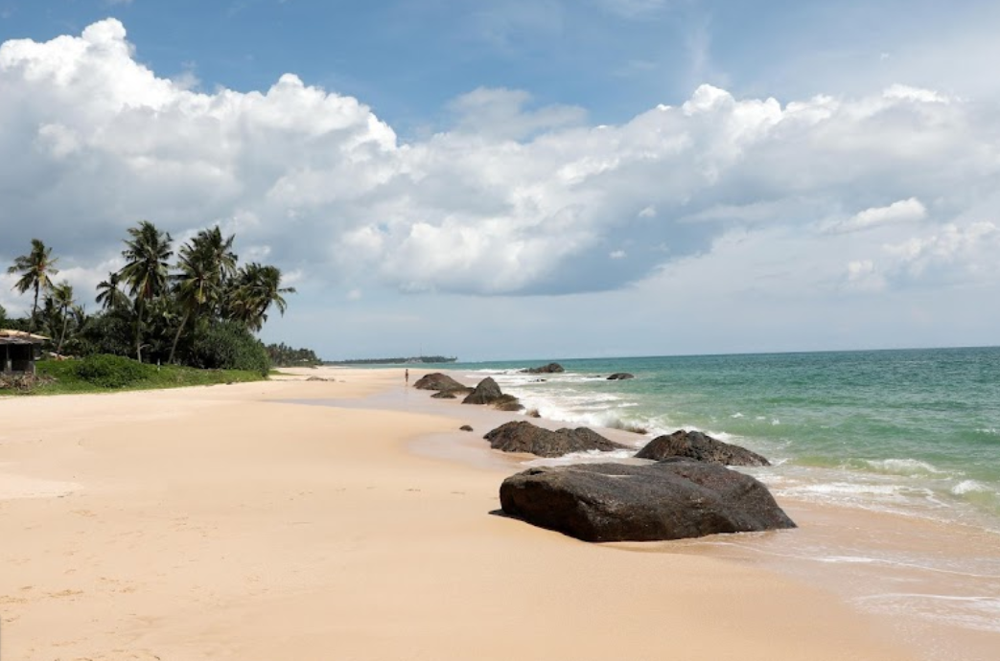

Situated a few kilometres north of the main Hikkaduwa town lies the Sea Turtle Hatchery and Rescue Centre, a centre with the aim of conserving some of the endangered species of turtles in the world. It is just one of many turtle hatcheries in the southern coast of the island. Initially starting as a community project to help protect the biodiversity of the southern coast, it is now a fully-fledged hatchery and rescue centre with dedicated teams that work round the clock to study, care and protect several turtle species.
Presently, there are five species of turtles that are taken care of in the hatchery and rescue centre. Such species are the Olive Ridley Turtle, Leatherback Turtle, Loggerhead Turtle, Hawksbill Turtle, and Green Turtle. The facilities of the sea turtle hatchery and rescue centre are all state-of-the-art, complete with water tanks to care for newborn turtles, along with adult turtle species that have been rescued from the sea due to injuries. One of the more peculiar sights in the centre is the area in which the turtles lay their eggs, as they have distinct little mounds of sand piled neatly between one another. Each of these mounds is monitored closely to calculate the hatching process of the turtle eggs.
In Hikkaduwa Sea Turtle Hatchery you will be able to see a very rare species of animal which is the turtle. You will witness turtles of different types, breeds, colors, and sizes.
This place also has eggs of turtles which are also showcased but you are not allowed to touch anything at all. If you are fortunate enough you will also be able to release a
turtle that is grown to its age back to the sea.
is a very special place that should not be missed to be visited.